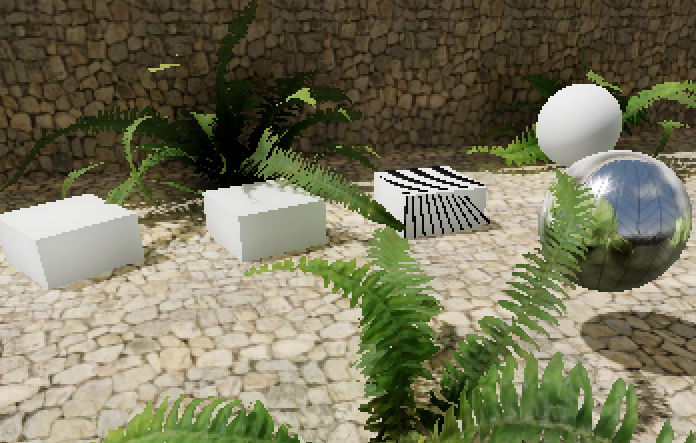
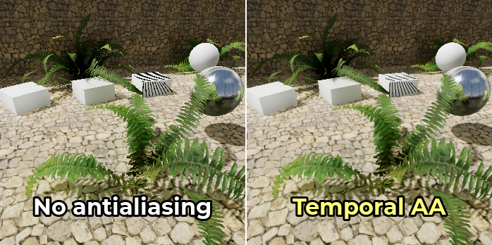
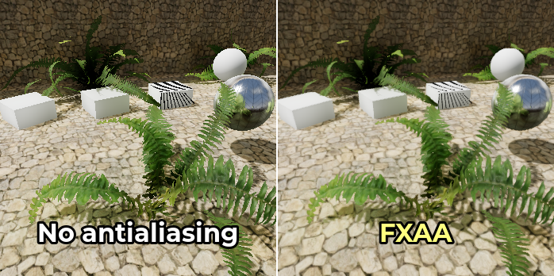
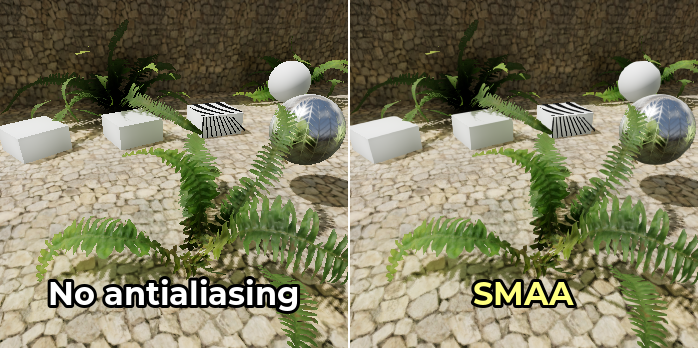
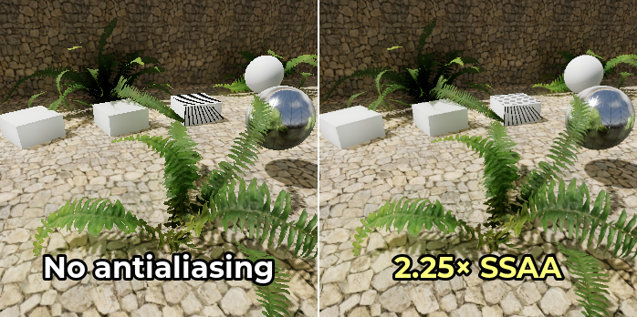
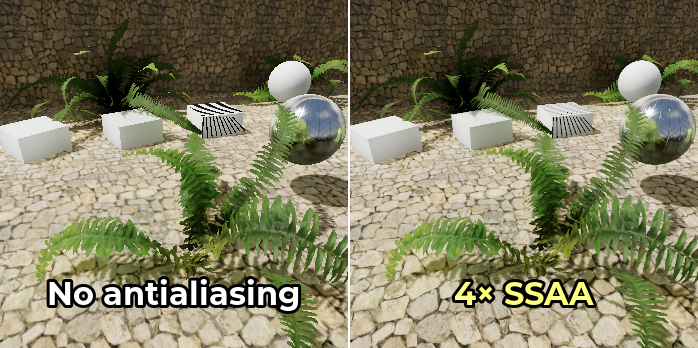

Khử răng cưa 3D
Xem thêm
Godot cũng hỗ trợ khử răng cưa (antialiasing) trong kết xuất 2D. Nội dung này được trình bày ở trang Khử răng cưa 2D.
Giới thiệu
Do độ phân giải có hạn, các scene được kết xuất 3D có thể xuất hiện hiện tượng răng cưa (aliasing). Các lỗi hình ảnh này thường biểu hiện dưới dạng hiệu ứng "bậc thang" trên cạnh bề mặt (răng cưa cạnh - edge aliasing) và dưới dạng nhấp nháy và/hoặc lấp lánh trên các bề mặt phản chiếu (răng cưa phản xạ - specular aliasing).
Trong ví dụ bên dưới, bạn có thể thấy các cạnh trông lởm chởm như khối. Thảm thực vật cũng chập chờn lúc hiện lúc mất, và các đường mảnh trên đỉnh chiếc hộp gần như đã biến mất:

Hình ảnh được phóng to 2× với bộ lọc nearest-neighbor để hiện tượng răng cưa dễ thấy hơn.
Để khắc phục điều này, có thể dùng nhiều kỹ thuật khử răng cưa khác nhau trong Godot. Chúng được trình bày chi tiết bên dưới.
Xem thêm
Bạn có thể so sánh các thuật toán khử răng cưa khi hoạt động thực tế bằng dự án demo 3D Antialiasing.
Khử răng cưa đa mẫu (MSAA)
Tính năng này có sẵn trong tất cả các renderer.
Kỹ thuật này là cách "truyền thống" để xử lý răng cưa. MSAA rất hiệu quả trên các cạnh hình học (đặc biệt ở mức cao hơn). MSAA hoàn toàn không gây mờ.
MSAA có 3 mức: 2×, 4×, 8×. Mức cao hơn khử răng cưa cạnh hiệu quả hơn, nhưng tốn tài nguyên hơn đáng kể. Trong các game có đồ họa hiện đại, bạn rất nên dùng MSAA 2× hoặc 4× vì MSAA 8× thường quá nặng.
Nhược điểm của MSAA là nó chỉ hoạt động trên các cạnh. Lý do là MSAA tăng số mẫu coverage (độ phủ), nhưng không tăng số mẫu color (màu). Vì số mẫu màu không tăng, fragment shader vẫn chỉ chạy một lần cho mỗi pixel. Do đó, MSAA không giảm răng cưa trong suốt (transparency aliasing) cho các material dùng chế độ trong suốt Alpha Scissor (trong suốt 1-bit). MSAA cũng không hiệu quả với răng cưa phản xạ.
Để giảm răng cưa trên các material alpha scissor, có thể bật alpha antialiasing (còn gọi là alpha to coverage) trên từng material cụ thể trong các thuộc tính StandardMaterial3D hoặc ORMMaterial3D. Alpha to coverage có chi phí hiệu năng vừa phải, nhưng giảm răng cưa hiệu quả trên các material trong suốt mà không gây mờ.
Để răng cưa phản xạ ít bị chú ý hơn, hãy dùng Screen-space roughness limiter, vốn được bật theo mặc định.
Có thể bật MSAA trong Project Settings bằng cách thay đổi giá trị của cài đặt Rendering > Anti Aliasing > Quality > MSAA 3D. Điều quan trọng là phải thay đổi giá trị của cài đặt MSAA 3D chứ không phải MSAA 2D, vì đây là hai cài đặt hoàn toàn riêng biệt.
So sánh giữa không khử răng cưa (trái) và các mức MSAA khác nhau (phải). Lưu ý rằng alpha antialiasing không được dùng ở đây:


Khử răng cưa theo thời gian (TAA)
Tính năng này chỉ có trong renderer Forward+, không có trong renderer Mobile hoặc Compatibility.
Khử răng cưa theo thời gian (temporal antialiasing) hoạt động bằng cách hội tụ kết quả của các khung hình đã kết xuất trước đó thành một khung hình chất lượng cao duy nhất. Đây là một quá trình liên tục, hoạt động bằng cách làm dao động nhẹ (jitter) vị trí của tất cả đỉnh trong scene ở mỗi khung hình. Việc dao động này nhằm thu được chi tiết dưới mức pixel và sẽ không thể nhận ra, trừ trong những tình huống cực đoan.
Kỹ thuật này thường được dùng trong các game hiện đại, vì nó mang lại hình thức khử răng cưa hiệu quả nhất đối với răng cưa phản xạ và các lỗi hình ảnh khác do shader gây ra. TAA cũng hỗ trợ đầy đủ khử răng cưa cho vùng trong suốt.
TAA gây ra một chút mờ khi bật trong các cảnh tĩnh, nhưng hiệu ứng mờ này trở nên rõ hơn khi camera di chuyển. Một nhược điểm khác của TAA là nó có thể tạo ra lỗi bóng ma (ghosting) phía sau các đối tượng chuyển động. Kết xuất ở tốc độ khung hình cao hơn sẽ giúp TAA hội tụ nhanh hơn, từ đó làm các lỗi bóng ma ít thấy hơn.
Có thể bật khử răng cưa theo thời gian trong Project Settings bằng cách thay đổi giá trị của cài đặt Rendering > Anti Aliasing > Quality > TAA.
So sánh giữa không khử răng cưa (trái) và TAA (phải):

AMD FidelityFX Super Resolution 2.2 (FSR2)
Tính năng này chỉ có trong renderer Forward+, không có trong renderer Mobile hoặc Compatibility.
Kể từ Godot 4.2, có hỗ trợ tích hợp sẵn cho AMD FidelityFX Super Resolution 2.2. Đây là một phương pháp upscale tương thích với tất cả GPU gần đây của mọi hãng. FSR2 thông thường được thiết kế để cải thiện hiệu năng bằng cách giảm độ phân giải kết xuất 3D nội bộ, rồi upscale lên độ phân giải đầu ra.
Tuy nhiên, khác với FSR1, FSR2 cũng cung cấp khử răng cưa theo thời gian. Điều này nghĩa là FSR2 có thể được dùng ở độ phân giải gốc để khử răng cưa chất lượng cao, với độ phân giải đầu vào bằng độ phân giải đầu ra. Trong trường hợp này, bật FSR2 thực ra sẽ giảm hiệu năng, nhưng sẽ cải thiện đáng kể chất lượng kết xuất.
Dùng FSR2 ở độ phân giải gốc tốn tài nguyên hơn dùng TAA ở độ phân giải gốc, vì vậy chỉ nên dùng khi GPU của bạn còn dư nhiều năng lực. Bù lại, FSR2 khử răng cưa tốt hơn và ít mờ hơn so với TAA, đặc biệt là khi chuyển động.
So sánh giữa không khử răng cưa (trái) và FSR2 ở độ phân giải gốc (phải):

Ghi chú
Theo mặc định, cài đặt dự án FSR Sharpness được đặt là 0.2 (giá trị cao hơn cho độ sắc nét thấp hơn). Để phục vụ việc so sánh, độ sắc nét FSR đã được tắt bằng cách đặt nó thành 2.0 trong ảnh chụp màn hình ở trên.
Khử răng cưa xấp xỉ nhanh (FXAA)
Chỉ khả dụng với renderer Forward+ và Mobile, không có trong renderer Compatibility.
Khử răng cưa xấp xỉ nhanh (fast approximate antialiasing) là một giải pháp khử răng cưa hậu kỳ (post-processing). Nó chạy nhanh hơn mọi kỹ thuật khử răng cưa khác và cũng hỗ trợ khử răng cưa cho vùng trong suốt. Tuy nhiên, vì thiếu thông tin theo thời gian, nó không giúp được nhiều đối với răng cưa phản xạ.
Kỹ thuật này đôi khi vẫn được dùng trong game di động. Tuy nhiên, trên các nền tảng desktop, FXAA nhìn chung đã không còn được ưa chuộng, nhường chỗ cho khử răng cưa theo thời gian, vốn hiệu quả hơn nhiều đối với răng cưa phản xạ. Dù vậy, việc cung cấp FXAA như một tùy chọn trong game vẫn có thể đáng giá cho những người chơi có GPU cấu hình thấp.
FXAA gây ra mức mờ vừa phải khi bật (nhiều hơn TAA khi đứng yên, nhưng ít hơn TAA khi camera di chuyển).
Có thể bật FXAA trong Project Settings bằng cách thay đổi giá trị của cài đặt Rendering > Anti Aliasing > Quality > Screen Space AA thành FXAA.
So sánh giữa không khử răng cưa (trái) và FXAA (phải):

Khử răng cưa hình thái dưới mức pixel (SMAA 1x)
Chỉ khả dụng với renderer Forward+ và Mobile, không có trong renderer Compatibility.
Sub-pixel Morphological Antialiasing là một giải pháp khử răng cưa hậu xử lý. Nó chạy chậm hơn FXAA một chút nhưng ít gây mờ hơn. Điều này rất hữu ích khi độ phân giải màn hình từ 1080p trở xuống. Giống như FXAA, SMAA 1x không có thông tin theo thời gian nên sẽ không giúp được nhiều trước răng cưa phản xạ (specular aliasing).
Hãy dùng SMAA 1x nếu bạn không đủ tài nguyên cho MSAA nhưng thấy FXAA quá mờ.
Kết hợp nó với TAA, hoặc thậm chí FSR2, để tối đa hóa khả năng khử răng cưa, đổi lại tốn GPU hơn và mờ hơn một chút. Cách này có lợi nhất trong các cảnh chuyển động nhanh hoặc ngay sau khi chuyển camera, đặc biệt ở FPS thấp.
Có thể bật SMAA 1x trong Project Settings bằng cách đổi giá trị của cài đặt Rendering > Anti Aliasing > Quality > Screen Space AA thành SMAA.
So sánh giữa không khử răng cưa (trái) và SMAA 1x (phải):

Khử răng cưa siêu mẫu (SSAA)
Tính năng này có sẵn trong tất cả các renderer.
Supersampling mang lại chất lượng khử răng cưa cao nhất có thể, nhưng cũng là phương pháp tốn kém nhất. Nó hoạt động bằng cách tô bóng (shading) mỗi pixel trong cảnh nhiều lần. Điều này cho phép SSAA khử răng cưa ở cạnh, độ trong suốt và răng cưa phản xạ cùng lúc mà không gây ra hiện tượng bóng ma (ghosting).
Nhược điểm của SSAA là chi phí cực kỳ cao. Chi phí này thường khiến SSAA khó dùng cho mục đích chơi game, nhưng bạn vẫn có thể thấy supersampling hữu ích cho kết xuất offline.
Khử răng cưa supersample được thực hiện bằng cách tăng cài đặt dự án nâng cao Rendering > Scaling 3D > Scale lên trên 1.0 đồng thời đảm bảo Rendering > Scaling 3D > Mode được đặt là Bilinear (mặc định). Vì hệ số tỷ lệ được định nghĩa theo từng trục, hệ số 1.5 sẽ cho ra SSAA 2.25×, còn hệ số 2.0 sẽ cho ra SSAA 4×. Vì Godot dùng bộ lọc bilinear của chính phần cứng để giảm mẫu (downsampling), kết quả sẽ sắc nét hơn ở các hệ số tỷ lệ nguyên (cụ thể là 2.0).
So sánh giữa không khử răng cưa (trái) và các mức SSAA khác nhau (phải):


Cảnh báo
Supersampling cũng đòi hỏi nhiều video RAM, vì nó cần kết xuất ở độ phân giải mục tiêu rồi thu nhỏ về kích thước cửa sổ. Ví dụ, hiển thị một dự án ở 3840×2160 (độ phân giải 4K) với SSAA 4× sẽ yêu cầu kết xuất cảnh ở 7680×4320 (độ phân giải 8K), tức gấp 4 lần số pixel.
Nếu bạn đang dùng kích thước cửa sổ lớn như 4K, bạn có thể thấy rằng việc tăng tỷ lệ độ phân giải vượt quá một giá trị nhất định sẽ gây chậm nghiêm trọng (hoặc thậm chí crash) do hết VRAM.
Bộ giới hạn độ nhám không gian màn hình
Chỉ khả dụng với renderer Forward+ và Mobile, không có trong renderer Compatibility.
Đây không phải là phương pháp khử răng cưa ở cạnh, nhưng là một cách giảm răng cưa phản xạ trong 3D.
Bộ giới hạn độ nhám không gian màn hình hoạt động tốt nhất trên hình học chi tiết. Dù có tác động lên việc kết xuất roughness map, ảnh hưởng của nó ở đó khá hạn chế.
Bộ giới hạn độ nhám không gian màn hình được bật mặc định; nó không cần thiết lập thủ công. Nó có ảnh hưởng nhỏ đến hiệu năng, vì vậy hãy cân nhắc tắt nó nếu dự án của bạn không bị răng cưa phản xạ ảnh hưởng nhiều. Bạn có thể tắt nó bằng cài đặt dự án Rendering > Quality > Screen Space Filters > Screen Space Roughness Limiter.
Bộ giới hạn độ nhám texture khi import
Giống như bộ giới hạn độ nhám không gian màn hình, đây không phải là phương pháp khử răng cưa ở cạnh, nhưng là một cách giảm răng cưa phản xạ trong 3D.
Giới hạn độ nhám khi import hoạt động bằng cách chỉ định một normal map làm hướng dẫn để giới hạn độ nhám. Việc này được thực hiện bằng cách chọn roughness map trong FileSystem dock, sau đó vào Import dock và đặt Roughness > Mode thành kênh màu mà roughness map được lưu trong đó (thường là Green), rồi đặt đường dẫn tới normal map của material. Hãy nhớ nhấn Reimport ở cuối Import dock sau khi đặt đường dẫn tới normal map.
Vì quá trình xử lý này chỉ diễn ra khi import, nó hoàn toàn không tốn chi phí hiệu năng. Tuy nhiên, tác động hình ảnh của nó có hạn. Giới hạn độ nhám khi import chỉ giúp giảm răng cưa phản xạ bên trong texture, chứ không giảm răng cưa xuất hiện ở các cạnh hình học trên các mesh chi tiết.
Nên dùng kỹ thuật khử răng cưa nào?
Không có kỹ thuật khử răng cưa nào "phù hợp cho mọi trường hợp". Vì khử răng cưa thường đòi hỏi nhiều ở GPU hoặc có thể gây mờ không mong muốn, bạn nên thêm một cài đặt cho phép người chơi tắt khử răng cưa.
Với các dự án có định hướng nghệ thuật chân thực (photorealistic), TAA thường là lựa chọn phù hợp nhất. Dù TAA có thể gây hiện tượng bóng ma, không có kỹ thuật nào khác chống răng cưa phản xạ tốt bằng TAA. Bộ giới hạn độ nhám không gian màn hình giúp được một chút, nhưng nhìn chung kém hiệu quả hơn nhiều trước răng cưa phản xạ. Nếu còn dư sức mạnh GPU, bạn có thể dùng FSR2 ở độ phân giải gốc để có một dạng khử răng cưa theo thời gian đẹp hơn so với TAA tiêu chuẩn.
Với các dự án có ít bề mặt phản chiếu (chẳng hạn phong cách hoạt hình), MSAA có thể hoạt động tốt. MSAA cũng là lựa chọn tốt nếu việc tránh mờ và lỗi theo thời gian là quan trọng, chẳng hạn trong các game đối kháng cạnh tranh.
Khi nhắm tới các nền tảng cấu hình thấp như di động hoặc đồ họa tích hợp, FXAA thường là lựa chọn khả thi duy nhất. MSAA 2× có thể dùng được trong một số trường hợp, nhưng các mức MSAA cao hơn khó có thể chạy mượt trên GPU di động.
Godot cho phép dùng nhiều kỹ thuật khử răng cưa cùng lúc. Điều này thường không cần thiết, nhưng có thể mang lại hình ảnh tốt hơn trên GPU cao cấp hoặc cho kết xuất không thời gian thực. Ví dụ, để các cạnh chuyển động trông đẹp hơn khi bật TAA, bạn cũng có thể bật MSAA cùng lúc.
So sánh các kỹ thuật khử răng cưa
Tính năng |
MSAA |
TAA |
FSR2 |
FXAA |
SMAA 1x |
SSAA |
SSRL |
|---|---|---|---|---|---|---|---|
Khử răng cưa ở cạnh |
🟢 Có |
🟢 Có |
🟢 Có |
🟢 Có |
🟢 Có |
🟢 Có |
🔴 Không |
Khử răng cưa phản xạ |
🟡 Một phần |
🟢 Có |
🟢 Có |
🟡 Một phần |
🟡 Một phần |
🟢 Có |
🟢 Có |
Khử răng cưa độ trong suốt |
🟡 Một phần [1] |
🟢 Có [2] |
🟢 Có [2] |
🟢 Có |
🟢 Có |
🟢 Có |
🔴 Không |
Độ mờ thêm vào |
🟢 Không có |
🟡 Một phần |
🟡 Một phần |
🟡 Một phần |
🟢 Thấp |
🟡 Một phần [3] |
🟢 Không có |
Hiện tượng bóng ma |
🟢 Không có |
🔴 Có |
🔴 Có |
🟢 Không có |
🟢 Không có |
🟢 Không có |
🟢 Không có |
Chi phí hiệu năng |
🟡 Trung bình |
🟡 Trung bình |
🔴 Cao |
🟢 Rất thấp |
🟢 Thấp |
🔴 Rất cao |
🟢 Thấp |
Forward+ |
✔️ Có |
✔️ Có |
✔️ Có |
✔️ Có |
✔️ Có |
✔️ Có |
✔️ Có |
Di động |
✔️ Có |
❌ Không |
❌ Không |
✔️ Có |
✔️ Có |
✔️ Có |
✔️ Có |
Compatibility |
✔️ Có |
❌ Không |
❌ Không |
❌ Không |
❌ Không |
✔️ Có |
❌ Không |